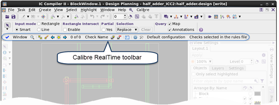

After
invoking IC Compiler II with Calibre RealTime Digital, you see the
Calibre RealTime Digital integrated toolbar.
Procedure
- Start IC Compiler II. For
example:
- At the
ic_shell command prompt, source the icc_calibre.tcl initialization
file:
icc2_shell> source $::env(MGC_HOME)/shared/pkgs/icv/tools/querytcl/icc_calibre.tcl
It may take a minute or so
to acquire all licenses and complete the initialization. The line “Calibre
RealTime:” and the standard Calibre copyright notice is displayed
in the transcript after successful initialization. The first two
lines are similar to the following:
Calibre RealTime:
// Calibre v.2018.2_41 Tue Jul 17 16:14:08 PDT 2018
If you do not see the preceding
lines, check that all environment variables are set as described
in the “Prerequisites” section.
A partial view of the design
window in IC Compiler II is shown in the following figure. The Calibre
RealTime Digital integrated toolbar is loaded.
Figure 1. Calibre
RealTime Digital in IC Compiler II
- Proceed to “Specifying and Using Multiple Run Configurations in Calibre RealTime Digital in IC Compiler II”.